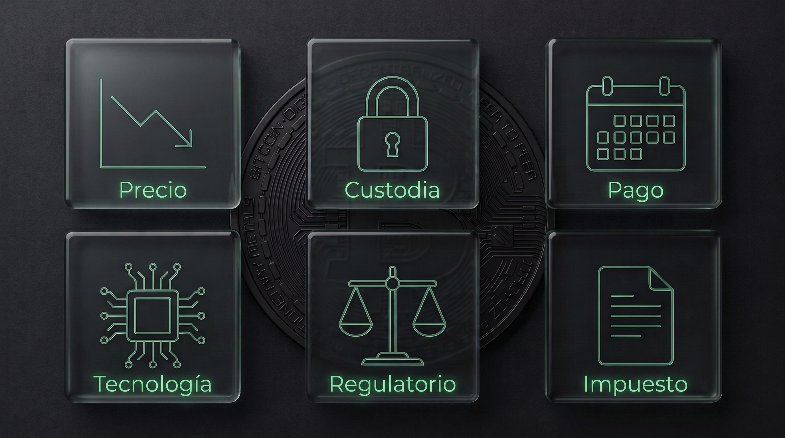
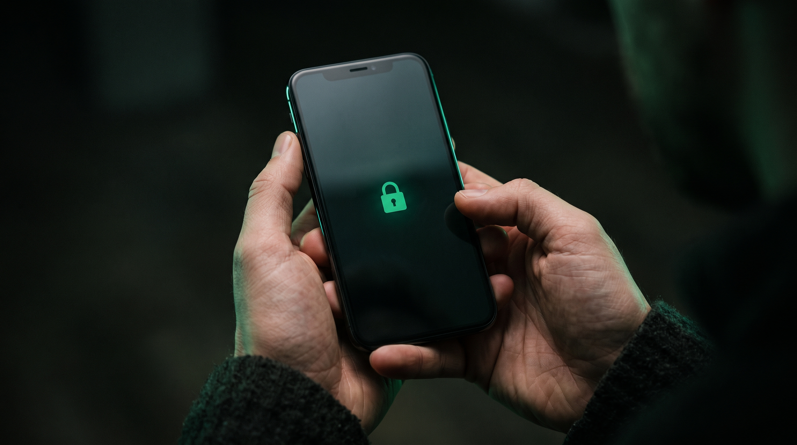

CriptoPrenda · Educación financiera
Riesgos y costos de un préstamo con garantía en Bitcoin: qué revisar antes de firmar
| Autor | Oscar Martínez Nieto [o "Revisado por" si Legal prefiere no firmar] |
| Revisión | Legal (si el autor es Legal, segunda revisión de Cumplimiento) y Producto |
| Publicación / actualización | 28-oct-2026 / [misma fecha al publicar] |
| URL sugerida | /blog/riesgos-y-costos-prestamo-con-garantia-en-bitcoin |
| Palabra clave principal | riesgos préstamo con bitcoin |
| Meta title (≤ 60 car.) | Riesgos y costos de un préstamo con garantía en Bitcoin |
| Meta descripción (≤ 155 car.) | Riesgos, costos y checklist para revisar un préstamo con garantía en Bitcoin antes de firmar: volatilidad, custodia, CAT, contrato y señales de alerta. |
| Breadcrumb | Blog / Liquidez / Riesgos / Riesgos y costos de un préstamo con garantía en Bitcoin |
| Etiquetas | Riesgos · Préstamo · Educación |
| Imagen principal | Cripto_riesgos_costos_prestamo_bitcoin.webp · 16:9 · 1920 px · Alt: "Lista de verificación de riesgos y costos de un préstamo con garantía en Bitcoin" |
| Enlaces internos | Blog 1, Blog 2, página "Cómo funciona y riesgos", FAQ, calculadora |
| Enlaces externos | CONDUSEF (CAT y educación financiera) · Banxico · Ley Fintech [URL exacta] |
| Schema | Article + BreadcrumbList + Person + FAQPage |
Blog / Liquidez / Riesgos / Riesgos y costos de un préstamo con garantía en Bitcoin
Por Oscar Martínez Nieto · 28 de octubre de 2026 · Actualizado: 28 de octubre de 2026
Síntesis: los principales riesgos de un préstamo con garantía en Bitcoin son la volatilidad del colateral, la custodia, el incumplimiento de pago, los riesgos tecnológicos y los cambios regulatorios y fiscales. Esta guía explica cada uno, los costos que debes sumar (intereses, comisiones y CAT), un checklist de diez preguntas para hacerle a cualquier plataforma y las señales de alerta de fraude.
En esta guía: 1) Riesgos principales · 2) Costos · 3) Checklist antes de firmar · 4) Señales de alerta · 5) Cómo reducir el riesgo · 6) Preguntas frecuentes
¿Cuáles son los principales riesgos de un préstamo con garantía en Bitcoin?
Los riesgos principales son seis: de precio, de custodia, de pago, tecnológico, regulatorio y fiscal. Conocerlos no significa evitar el producto, sino decidir con información.
| Riesgo | Qué significa |
|
|
|---|---|---|---|
| Precio (volatilidad) | Si el Bitcoin baja, tu LTV sube y la deuda pesa más frente al colateral. |
|
|
| Custodia | Tu colateral está en manos de un tercero o de la plataforma. |
|
|
| Pago | Debes pagar capital, intereses y comisiones en tiempo y forma. |
|
|
| Tecnológico y operativo | Fallas de plataforma, errores de transferencia o acceso no autorizado. |
|
|
| Regulatorio | La regulación de activos virtuales puede cambiar. |
|
|
| Riesgo | Qué significa |
|
|
|---|---|---|---|
| Fiscal | Vender, intercambiar o recibir criptoactivos puede tener efectos fiscales. |
|
|
¿Qué costos debes sumar además de los intereses?
El costo real es la suma de intereses, comisiones y otros cargos. En México, el CAT (Costo Anual Total) es el indicador que permite comparar créditos en un solo porcentaje anual; pídelo siempre por escrito.
Intereses: confirma si la tasa es fija o variable y sobre qué saldo se calcula.
Comisión de apertura: suele cobrarse una vez al inicio.
Costos de salida o conversión: si recibes stablecoins o tienes que convertir a pesos, puede haber diferencias de tipo de cambio o comisiones de terceros.
Custodia y administración: pregunta si existen cargos recurrentes.
Checklist: 10 preguntas antes de firmar
¿Quién otorga el préstamo y qué entidad es responsable?
¿Quién custodia mi Bitcoin y dónde queda resguardado?
¿Mi colateral puede prestarse, reutilizarse o rehipotecarse?
¿Qué ocurre si el precio del Bitcoin baja? ¿Hay llamadas de margen o venta del colateral?
¿La tasa es fija o variable? ¿Cuál es el CAT?
¿Qué comisiones y cargos adicionales existen?
¿Puedo pagar anticipadamente? ¿Hay penalización?
¿Qué pasa si no pago o me atraso?
¿Cuándo y cómo recibo el dinero y cuándo y cómo recupero mi Bitcoin?
¿Cómo presento una duda, aclaración o queja?
BANNER PROMOCIONAL · REVISA CÓMO FUNCIONA
Conoce el proceso, los riesgos y las condiciones antes de simular tu préstamo. [Texto ≤ 150 caracteres]
Botón CTA: Ver cómo funciona
¿Cuáles son las señales de alerta de un fraude cripto?
Desconfía si te prometen rendimientos garantizados, si te presionan para depositar de inmediato, si te piden tus llaves privadas o frase semilla, o si te contactan desde perfiles que no son los oficiales. CriptoPrenda nunca pedirá tus llaves privadas ni depósitos por redes sociales.
¿Cómo reducir el riesgo si decides pedir un préstamo?
Elige un LTV bajo para tener margen ante caídas de precio.
Pide solo el monto que realmente necesitas y puedes pagar.
Guarda toda la documentación y verifica los canales oficiales.
Revisa periódicamente el valor de tu colateral y tu saldo.
Conclusión
Un préstamo con garantía en Bitcoin puede darte liquidez sin vender, pero requiere decisiones informadas. Los riesgos principales son el precio, tipo de custodia, tu capacidad de pago y el marco legal y fiscal.
Usa la lista de este producto con cualquier plataforma, incluida la nuestra, y si algo no te queda claro, pregunta antes de firmar.
Preguntas frecuentes
¿Cuál es el mayor riesgo de un préstamo con garantía en Bitcoin?
La volatilidad: una caída fuerte del precio aumenta tu LTV. Por eso conviene elegir un LTV conservador y entender qué ocurre en el contrato si el precio baja. [Respuesta específica de CriptoPrenda.]
¿Quién custodia mi Bitcoin?
Preguntarte ¿quién custodia mi Bitcoin? es el primer paso hacia la madurez financiera en el ecosistema cripto. Optar por la auto custodia segregada significa renunciar a la falsa comodidad de los intermediarios a cambio de la máxima seguridad, privacidad y control sobre tu patrimonio.
¿Cómo sé si un canal es oficial?
Revisa que el perfil o dominio coincida con los canales publicados en nuestro sitio [enlace a página "Canales oficiales"] y no compartas tus llaves privadas con nadie.
Recursos visuales

